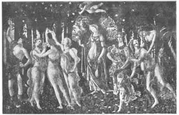
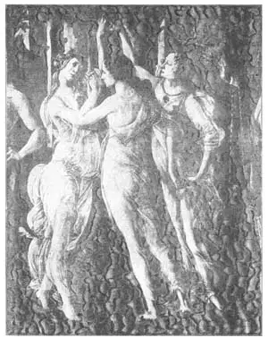
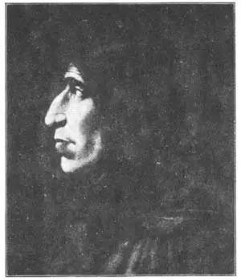

10
SINS AND SERMONS
罪恶与布道

ALMOST the first date that every boy and girl learns is 1492, the year that Columbus discovered America. Columbus was an Italian, but most of the people in Italy at that time were not interested in Columbus or what he was things. They were interested in just two things. First they. were interested having a good time. The second thing they were interested in was art. They were interested in Greece and its art and learning—not in discovering new countries. This time was known as the beginning of the High Renaissance and began just about 1492.
When you look at a globe of the world, you can hardly find Italy, no larger than your little finger, sticking down into the Mediterranean Sea. And yet in this little finger of land lived, at the time we are talking about, the greatest artists there have ever been. We call these artists the Old Masters. It may seem strange that just there in Italy the greatest artists should have been born and lived, all within a few miles of one another. One explanation is that Italy was the center of the Christian religion, and up to this time Italian artists painted no pictures but religious ones.
An artist named Botticelli (Bot-tee-chel’lee), was one of the first Italian artists to paint pictures of things that were not told about in the Bible. Botticelli painted religious pictures too, but he liked especially to paint pictures of Greek gods and goddesses and other fanciful subjects, for the Renaissance was a time, as I’ve told you, when every one was interested in Greek art, history, and learning. Botticelli had a peculiar style of painting. IIis women usually had long legs and seemed to be dancing or floating along the ground instead of standing or walking. They were clad in very filmy, gauzy gowns as thin as a veil that showed their figures almost as if they had nothing on. Here is one called “The Allegory of Spring.”
Now, at the time of Columbus, there was living and preaching in Florence a monk named Savonarola, who some people think was mad. At any rate, he was such a powerful preacher that those who heard his sermons would do almost anything he told them to. He seemed to hypnotize them. Most of the people in Florence were very wicked. They thought of nothing but pleasure and having a good time, no matter how bad they were when they had a good time. Savonarola preached against the sins of this world, and prophesied death for those who did not repent and mend their ways. He preached against people who played games of cards or dice, who used rouge on their faces, who wore ornaments, who danced, who sang songs that were not hymns, or wrote books or painted pictures that were not religious. The people of Florence began to repent and so one day they brought all their ornaments and finery and fancy clothes and bad books to the public square and made a huge bonfire of them. It was much higher than a house. Many ugly things were burned up, probably most of them ought to have been burned. It might be a good idea if, once a year, we were to gather together all the flimsy ornaments, trashy pictures, and other rubbish in our houses and make a huge bonfire of them.

No.10-1 THE ALLEGORY OF SPRING（《春》） BOTTICELLI（波提切利 作）
Gourtesy of The University Prints
Botticelli had heard Savonarola preach, and he felt that he too had committed a sin in painting pictures of gods and goddesses and other subjects that were not religious. So he brought his paintings that were not religious and threw them on the bonfire. Fortunately for us, only a few of Botticelli’s pictures were burned and his best ones are still preserved in art galleries.
Here is one of the religious kind, a Madonna. Notice that it is circular in shape, not square-cornered as most pictures are. Circular pictures are called tondos , which means round.
This is called “The Madonna of the Coronation” (the crowning), because two angels are putting a crown on Mary to show that she is the Queen of Heaven. She is writing a song in a book while the infant Jesus seems to be guiding her hand. The song sung in church to-day is called the Magnificat because that is the Latin name, and so the picture too is often called “The Magnificat.” The song is a thanksgiving to God that He has chosen Mary from among all the women in the world, to be the mother of Jesus.

No.10-2 DETAIL FROM THE ALLEGORY OF SPRING《春》之局部
BOTTICELLI（波提切利 作）
The boy holding the ink-well and the one holding the book were real boys. They did not live in the time of Christ, but in the time of Botticelli, so it may seem strange that they should have been put in the picture, but the Old Masters often did that sort of thing. When these two boys grew up both of them became popes.
The people who Savonarola said were so wicked could stand him no longer, and even some of his own followers turned against him. Finally they got hold of him and hanged him on a cross placed in the public square. Then, not satisfied with that, they burned his body at the stake. And not satisfied with that they threw his ashes into the river.
There was a young painter in Florence who, as Botticelli had done, had also burned all of his pictures that were not religious. He was so shocked by the way in which Savonarola had been treated that he gave up painting and became a monk himself. He took the name of Fra Bartolommeo and went to live in the monastery where Savonarola had lived and also where Fra Angelico before him had lived—the monastery of St. Mark’s. For six years he never painted a stroke or touched a brush. He did nothing but pray. Then he was persuaded to start painting once more, and after that he made many beautiful pictures—all of them, of course, religious. One picture he painted was of a saint named Sebastian. Saint Sebastian was shot to death with arrows, because he was a Christian. The picture which Fra Bartolommeo painted for his monastery showed Saint Sebastian without clothes and with arrows sticking in his body. The monks thought this so immodest that at last the picture was removed from the monastery.
Fra Bartolommeo painted a picture of his hero Savonarola. Now, Savonarola was not handsome at all. In fact, he had a very big nose, and was really ugly, so ugly that his enemies used to joke about it. But the painting of him that Fra Bartolommeo made shows that a picture can be great without being pretty. Fra Bartolommeo didn’t change Savonarola’s features at all. He painted the man just as he was, but the picture is beautiful because it shows some one who bore the most terrible suffering and agony for what he believed was right.

No.10-4 SAVONAROLA《萨伏那洛拉》
FRA BARTOLOMMEO（弗拉•巴托罗米奥 作）
Most artists, when they draw or paint pictures of people, have real men or women to pose for them. Models, we call them. Instead of live models, Fra Bartolommeo used a wooden jointed doll which he dressed and arranged in the position he wanted the figure to be. Such a wooden doll is called a lay-figure or one to draw from.
Fra Bartolommeo was the first painter to put baby angels at the foot of his pictures of the Madonna, and other painters copied this idea.
【中文阅读】
几乎所有孩子要记住的第一个历史年代是1492年，就是哥伦布发现美洲大陆的那一年。哥伦布是意大利人，但当时大部分意大利人对哥伦布和他所做的事不感兴趣。他们只对两件事感兴趣：一是享受生活，二是欣赏艺术。他们对希腊以及希腊的艺术和知识感兴趣——对发现新大陆漠不关心。这便是文艺复兴鼎盛时期的开端，也就是大约从1492年开始。
我们在看地球仪的时候，几乎找不到意大利。它深入地中海，只有小拇指一般大 小。但是，在我们谈论的那个时代，这个小拇指一般大小的土地上却生活着一批最伟大的艺术家。我们称他们为“古代大师”。这些伟大的画家们都出生在意大利，而且彼此生活在相距只有几英里的地方，这可能有些奇怪。一个解释就是意大利是基督教的中心，并且直到那时意大利画家只画宗教题材的画。
有个叫波提切利的画家，他是最早一个画《圣经》故事之外事物的意大利画家。波提切利也画宗教画，但他更热衷于画希腊诸神以及其他的虚构主题。正如我说过的那样，文艺复兴时期的人们都热衷于希腊的艺术、历史和知识。波提切利的绘画风格别具一格。他画中女性的腿通常都修长，看起来像在地上翩翩起舞，而不是站立或行走。她们穿着薄如面纱蝉翼型长裙，充分展示了女性婀娜多姿的体态，仿佛一丝不挂。见图《春》。
在哥伦布时期，佛罗伦萨住着一个叫萨伏那洛拉的修士。他四处布道，有些人认为他是疯子。但不管怎样，他是一位很有感染力的布道者，因为听过他道的人会按照他的吩咐去做事。他好像把他们催眠了。佛罗伦萨大多数人都邪恶。他们只贪图玩乐和享受，只要能享乐，根本不管自己坏到什么程度。萨伏那洛拉极力反对社会上的罪恶，并预言那些不悔改归正的人必将遭毁灭。他在传道中劝诫人们不要玩纸牌或掷骰子，不要浓妆艳抹，不要穿金戴银，不要手舞足蹈，不要唱圣诗之外的歌，不要写与宗教无关的书，不要画与宗教无关的画。佛罗伦萨人终于开始忏悔。有一天，他们把所有的装饰品，花哨的衣裳和不健康的书籍带到公共广场上，一把火把它们全烧了，火苗蹿得比房屋还要高。许多丑陋的东西都被烧毁了，或许大部分理应被销毁。如果我们每年将所有劣质的装饰，庸俗的图画和家中其他垃圾堆集一处，点把火进行焚烧，这或许是一个不错的想法。
波提切利听了萨伏那洛拉的布道后，自觉有罪，因为他画过许多神像和非宗教主题的画。于是，他把那些非宗教主题的画拿出来，统统扔进火中。幸运的是，当时只有几幅画被烧毁，而他最好的作品仍完好无损地保存在美术馆里。
下面是他的一幅属于宗教题材的画图（NO.10-3），画的是圣母像。注意它是圆形的，不像大多数画是方形的。圆形的画就叫圆形画，意思是圆的。
这幅画叫做《圣母颂》（《圣母加冕图》），因为图上两位天使正把一顶金冠戴在玛利亚头上，告诉人们她是圣母。玛利亚正在一本书上写一首歌而圣婴耶稣好像在指引着她的手。这歌今天还在教会里颂唱，歌名就叫“尊主颂”，因为这是一个拉丁语名称，所以这幅画也经常被称作《尊主颂》。这歌歌颂的是玛利亚感恩上帝从万人中挑选她做耶稣之母。
画中那个手托油墨罐的男孩和手捧书本的男孩都是真实的人物。他们并不是生活在基督那个时代，而是生活在波提切利的时代。所以，把他们放在这幅画中可能显得有点奇怪。然而，古代大师们却经常做这样的事。画中这两个男孩长大后都当了教皇。
那些被萨伏那洛拉指责邪恶的人再也无法忍受他了，而他的一些追随者甚至也开始背弃他。最后，他们把他抓住，在公共广场的一个十字架上把他绞死了。可他们不 满足，于是把他的尸体捆在木柱上烧掉了。但即便这样他们还没满足，最后干脆把他的骨灰撒到河里。
在佛罗伦萨还有一位年轻的画家。他像波提切利曾经做过的那样，把他所有与宗教无关的画作都拿出来烧了。萨伏那洛拉的悲惨遭遇使他十分震惊，于是他放弃了画画，作了一名修士。他取名弗拉•巴托罗米奥，并住进了圣马可修道院。萨伏那洛拉和在他之前的安哲利科都曾在这座修道院生活过。他六年间从未画过一幅画，甚至连画笔都不碰。他每天只做祈祷。后来，人们劝他重新画画，那之后他画了许多漂亮的画——当然都是宗教题材的。其中有幅画的是一个叫做塞巴斯蒂安的圣徒。圣赛巴斯蒂安因信基督而被人乱箭射死。弗拉•巴托罗米奥为修道院画的这幅画的画面上，圣赛巴斯蒂安赤身裸体，乱箭穿身。修士们认为这幅画有伤风化，最终还是将它送出了修道院。
弗拉•巴托罗米奥给他心中的英雄萨伏那洛拉画了一幅画像。现在看来，萨伏那洛拉长得一点都不英俊。实际上，他长了个大鼻子，显得很丑，所以反对他的人就总以此来取笑他。弗拉•巴托罗米奥所画的萨伏那洛拉虽然不好看，但那幅画却很了不起。弗拉•巴托罗米奥并没有改变萨伏那洛拉的五官，只是照着萨伏那洛拉自身的样子来画，但是画像却很美，因为画中的人物为了坚持自己的信念，遭受了最痛苦的折磨和苦难。
大多数画家在画人物时，都会找真人男女来摆造型。我们称他们为模特。不过弗拉•巴托罗米奥不用真人当模特，而用一个木偶当模特。他先给木偶穿上衣服，然后按照自己想要画的人物造型给木偶摆好姿势。这种木偶叫做人体活动模型，或者说是专门用来为画画摆造型的。
弗拉•巴托罗米奥是第一个把小天使画在圣母像底部的画家。其他画家也借鉴了这一思路。